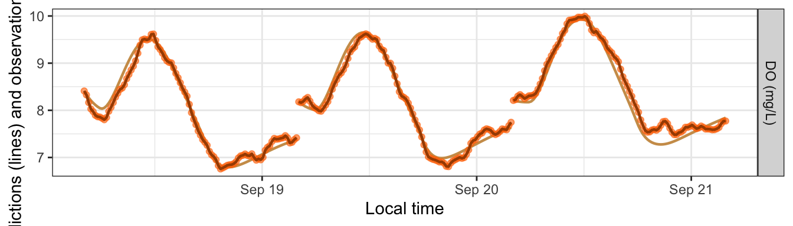
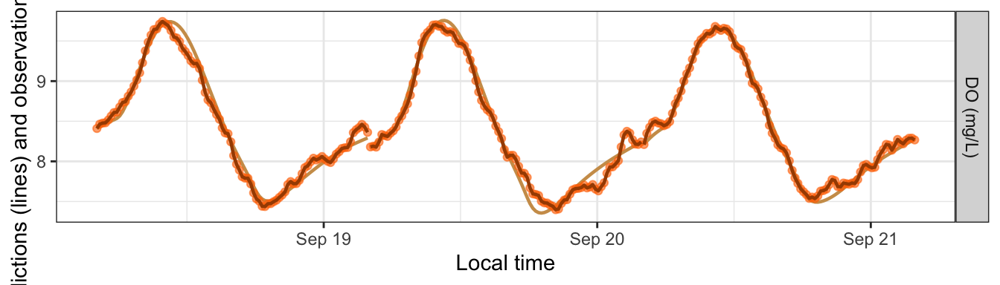
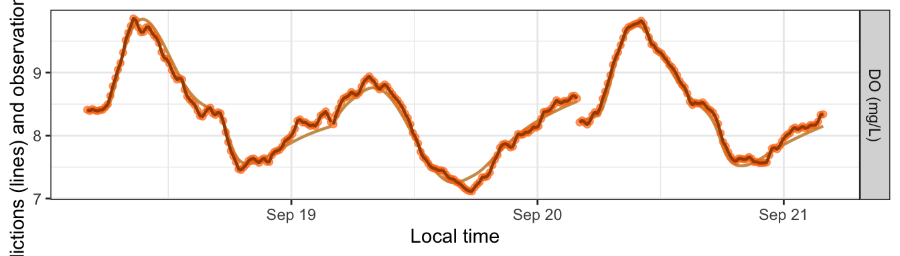
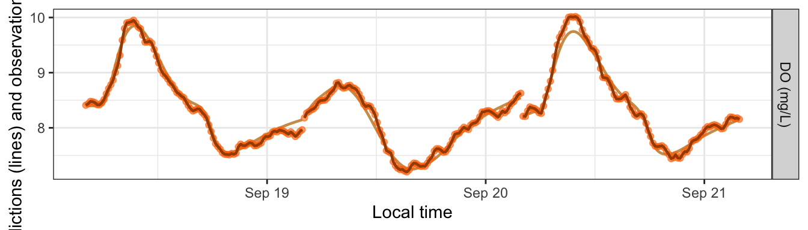
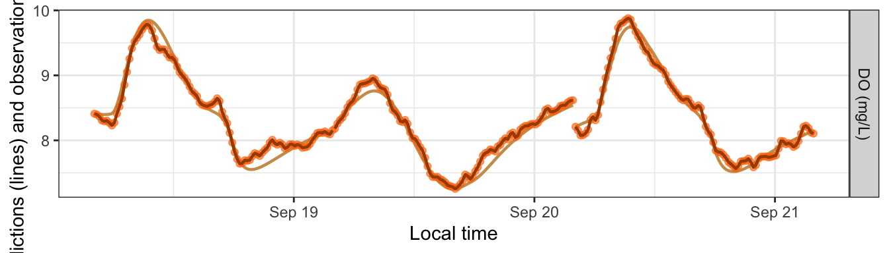
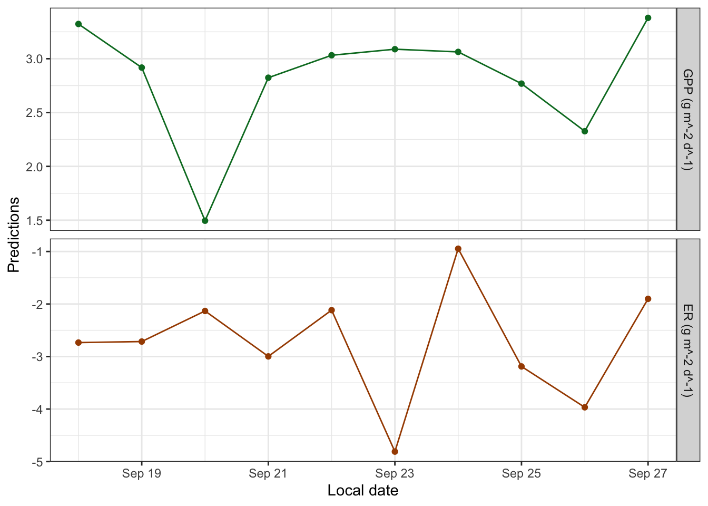
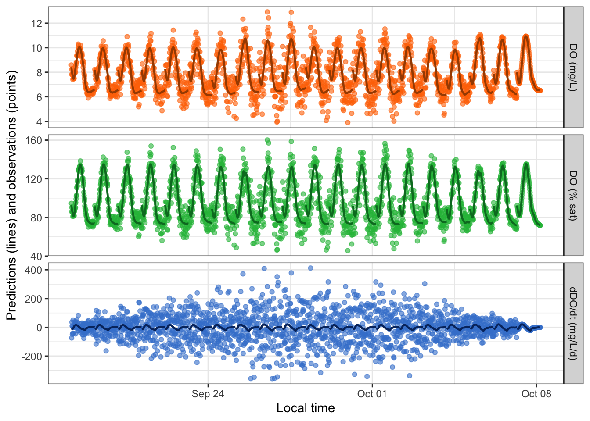
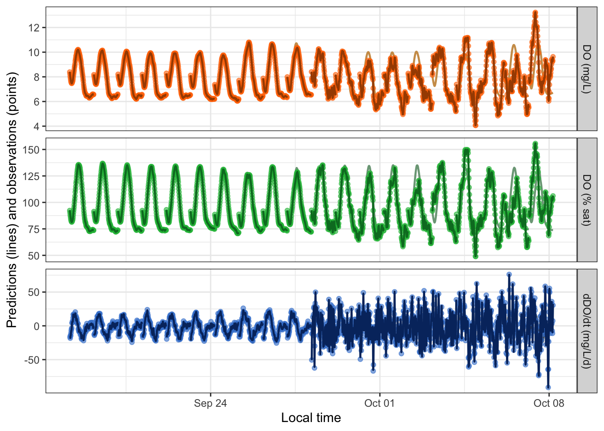
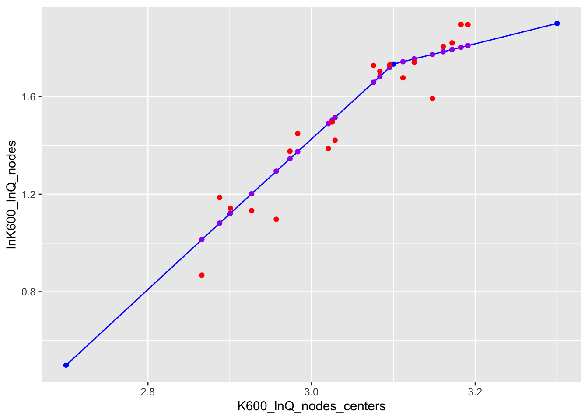

Overview
This vignette shows how to simulate dissolved oxygen ‘observations’ for the purpose of exploring and testing metabolism models.
Setup
Load streamMetabolizer and some helper packages.
Get some data to work with: here we’re requesting three days of data at 15-minute resolution. Thanks to Bob Hall for the test data.
dat <- data_metab('3', '15')Creating a Sim Model
To create a simulation model, you should
- Choose a model structure
- Choose daily metabolism parameters
- Choose the other model specifications
- Create the model
- Generate predictions (simulations) from the model
1. Choosing the model structure
You can simulate data using any of the GPP and ER functions available to MLE models. Simulations are done by models of type 'sim' but otherwise take very similar arguments to those of an MLE model. Here we’ll use a model where ER is a function of temperature.
name_sim_q10 <- mm_name('sim', ER_fun='q10temp')2. Choosing the daily parameters
To simulate data, you need to specify the daily parameters beforehand. The model structure determines which parameters are needed. There are three good ways to learn which daily parameters you need to specify.
A. Trial and error
To learn about parameter needs by trial and error, simply create the model with the equations you want but without daily inputs, ask for the parameters, and read the error message to get a list of parameters. It’s fine to use the defaults for the specifications for now.
mm_sim_q10_trial <- metab(specs(name_sim_q10), dat)
get_params(mm_sim_q10_trial) date K600.daily GPP.daily ER20 err.obs.sigma err.obs.phi err.proc.sigma err.proc.phi
1 2012-09-18 3.139130 6.078223 -10.172252 0.01 0 0.2 0
2 2012-09-19 0.000000 6.996890 -8.034961 0.01 0 0.2 0
3 2012-09-20 2.740712 9.656541 -4.531754 0.01 0 0.2 0
discharge.daily
1 20.39247
2 24.44253
3 18.61086Great: we need GPP.daily, ER20, and K600.daily. Now we can pick values for those parameters and put them in a data.frame.
params_sim_q10a <- data.frame(date=as.Date(paste0('2012-09-',18:20)), GPP.daily=2.1, ER20=-5:-3, K600.daily=16)
params_sim_q10a date GPP.daily ER20 K600.daily
1 2012-09-18 2.1 -5 16
2 2012-09-19 2.1 -4 16
3 2012-09-20 2.1 -3 16B. Generate parameters from another model
You can also use fitted parameters from another model as your input for a simulation model. This method could be useful for identifying realistic parameters and/or exploring why a model fitting process didn’t work so well.
First fit an MLE model to the same data using the GPP_fun and ER_fun you want. It’s fine (again) to use the defaults for the specifications.
Then ask for the parameters in the right format (without columns for uncertainty or messages).
params_sim_q10b <- get_params(mm_mle_q10, uncertainty='none', messages=FALSE)
params_sim_q10b date GPP.daily ER20 K600.daily
1 2012-09-18 2.051333 -2.696135 22.36965
2 2012-09-19 2.436224 -3.147503 24.27164
3 2012-09-20 2.090918 -2.370546 22.84253C. Look at ?mm_name
Try it. We put lots of details in the help file. Check out the documentation for the GPP_fun and ER_fun args in particular.
?mm_nameAfter reading the documentation you’ll create a data.frame of the same format as in options A or B.
3. Choosing the specifications
After choosing parameters, the next step is to choose the rest of the specifications. The main difference between sim models and other models is that you can choose values for the probability distributions of the observation and/or process errors. See ?specs for details on the distribution parameters err_obs_sigma, err_obs_phi, err_proc_sigma, and err_proc_phi.
specs_sim_q10 <- specs(name_sim_q10, err_obs_sigma=0, err_proc_sigma=1, K600_daily=NULL, GPP_daily=NULL, ER20=NULL)
specs_sim_q10Model specifications:
model_name s_np_oipcpi_tr_plrqkm.rnorm
day_start 4
day_end 28
day_tests full_day, even_timesteps, complete_data, pos_discharge, pos_depth
required_timestep NA
discharge_daily function; see element [['discharge_daily']] for details
DO_mod_1 NULL
K600_daily NULL
GPP_daily NULL
ER20 NULL
err_obs_sigma 0
err_obs_phi 0
err_proc_sigma 1
err_proc_phi 0
err_round NA
sim_seed NA 4. Creating a model
Now you can create a simulation model much as you would an MLE or Bayesian model. We’ll make two models here, one for each of the parameter sets we created above.
5. Generating predictions
Predictions and simulations are one and the same when your model is of type sim. The output of predict_DO for sim models includes three DO concentration columns. DO.pure is what the DO concentrations would be if the GPP, ER, and K600 parameters exactly described what occurred in the stream. If there’s process error in your model, DO.mod will differ from DO.pure in that DO.mod also contains the process error as a fourth driver (on top of GPP, ER, and reaeration) of in-situ DO concentrations. (DO.mod and DO.pure are identical if there’s no process error.) Lastly, DO.obs is a simulation of what your sensor might record; it includes everything in DO.mod plus observation error representing inaccuracies in how the sensor reads or records the DO concentration. These three variables are plotted as a muted-color line (DO.pure), a bold dark line (DO.mod), and brightly colored points (DO.obs). DO.pure is mostly hidden behind the others unless the errors are large.
head(predict_DO(mm_sim_q10a)) date solar.time DO.sat depth temp.water light DO.pure DO.mod DO.obs
5689 2012-09-18 2012-09-18 04:05:58 9.083329 0.16 3.60 0 8.410000 8.410000 8.410000
5692 2012-09-18 2012-09-18 04:20:58 9.093063 0.16 3.56 0 8.333532 8.327458 8.327458
5695 2012-09-18 2012-09-18 04:35:58 9.105254 0.16 3.51 0 8.266667 8.270311 8.270311
5698 2012-09-18 2012-09-18 04:50:58 9.112582 0.16 3.48 0 8.208204 8.246432 8.246432
5701 2012-09-18 2012-09-18 05:05:58 9.127267 0.16 3.42 0 8.157374 8.265991 8.265991
5704 2012-09-18 2012-09-18 05:20:58 9.137079 0.16 3.38 0 8.113493 8.252088 8.252088
head(predict_DO(mm_sim_q10b)) date solar.time DO.sat depth temp.water light DO.pure DO.mod DO.obs
5689 2012-09-18 2012-09-18 04:05:58 9.083329 0.16 3.60 0 8.410000 8.410000 8.410000
5692 2012-09-18 2012-09-18 04:20:58 9.093063 0.16 3.56 0 8.431047 8.470168 8.470168
5695 2012-09-18 2012-09-18 04:35:58 9.105254 0.16 3.51 0 8.450642 8.538804 8.538804
5698 2012-09-18 2012-09-18 04:50:58 9.112582 0.16 3.48 0 8.468822 8.608271 8.608271
5701 2012-09-18 2012-09-18 05:05:58 9.127267 0.16 3.42 0 8.485984 8.632272 8.632272
5704 2012-09-18 2012-09-18 05:20:58 9.137079 0.16 3.38 0 8.502466 8.641000 8.641000
plot_DO_preds(mm_sim_q10a, y_var='conc')
plot_DO_preds(mm_sim_q10b, y_var='conc')
Simulating Errors
The main purpose of simulation models is to generate DO ‘observations’ with error, i.e., noise, to see whether other models can recover the underlying parameters despite the noise.
For this section we’ll use a simulation with GPP as a saturating function of light. We’ll use method B from above to choose our daily parameters.
Innovative errors
By default, simulations generate new noise each time you request predictions.
mm_sim_sat_i <- metab(specs_sim_sat, dat, data_daily=params_sim_sat)
plot_DO_preds(mm_sim_sat_i, y_var='conc')
plot_DO_preds(mm_sim_sat_i, y_var='conc')
Fixed errors
Alternatively, you can revise the value of sim_seed to be a number (any number) and then the simulation produces the same noise each time.
mm_sim_sat_f <- metab(revise(specs_sim_sat, sim_seed=47), dat, data_daily=params_sim_sat)
plot_DO_preds(mm_sim_sat_f, y_var='conc')
plot_DO_preds(mm_sim_sat_f, y_var='conc')
Inspecting Models
We’ll use a slightly longer dataset here to demonstrate the potential for random noise at the levels of both the observations (every time you run predict_DO()) and the daily parameters (every time you define data_daily).
dat <- data_metab('10', '30')
params <- data.frame(date=as.Date(paste0('2012-09-',18:27)), Pmax=rnorm(10, 6, 2), alpha=rnorm(10, 0.01, 0.001), ER20=rnorm(10, -4, 2), K600.daily=16)
specs <- specs(mm_name('sim', GPP_fun='satlight', ER_fun='q10temp'), err_obs_sigma=0.2, err_proc_sigma=1, K600_daily=NULL, Pmax=NULL, alpha=NULL, ER20=NULL)
mm <- metab(specs, data=dat, data_daily=params)Sim models print out their parameters with asterisks to denote that the values are fixed rather than fitted.
mmmetab_model of type metab_sim
streamMetabolizer version 0.12.1.9000
Specifications:
model_name s_np_oipcpi_tr_psrqkm.rnorm
day_start 4
day_end 28
day_tests full_day, even_timesteps, complete_data, pos_discharge, pos_depth
required_timestep NA
discharge_daily function; see element [['discharge_daily']] for details
DO_mod_1 NULL
K600_daily NULL
Pmax NULL
alpha NULL
ER20 NULL
err_obs_sigma 0.2
err_obs_phi 0
err_proc_sigma 1
err_proc_phi 0
err_round NA
sim_seed NA
Fitting time: 0.003 secs elapsed
Parameters (10 dates)(* = fixed value):
date K600.daily Pmax alpha ER20 err.obs.sigma err.obs.phi err.proc.sigma
1 2012-09-18 16* 8.499653* 0.010029735* -4.780125* 0.2 0 1
2 2012-09-19 16* 7.007731* 0.010537178* -4.657027* 0.2 0 1
3 2012-09-20 16* 3.238979* 0.009774623* -3.654986* 0.2 0 1
4 2012-09-21 16* 6.647592* 0.011448446* -5.116775* 0.2 0 1
5 2012-09-22 16* 7.267074* 0.011769600* -3.637974* 0.2 0 1
6 2012-09-23 16* 7.610239* 0.011205473* -8.047155* 0.2 0 1
7 2012-09-24 16* 8.687355* 0.008570020* -1.581533* 0.2 0 1
8 2012-09-25 16* 6.872180* 0.010270915* -5.840345* 0.2 0 1
9 2012-09-26 16* 5.671489* 0.009372155* -7.103388* 0.2 0 1
10 2012-09-27 16* 8.824851* 0.011480065* -3.531540* 0.2 0 1
err.proc.phi discharge.daily msgs.fit
1 0 15.60672 NA
2 0 21.09041 NA
3 0 14.53161 NA
4 0 26.43299 NA
5 0 19.50182 NA
6 0 18.13035 NA
7 0 18.81140 NA
8 0 19.12364 NA
9 0 17.46230 NA
10 0 19.82438 NA
Predictions (10 dates):
date GPP GPP.lower GPP.upper ER ER.lower ER.upper msgs.fit msgs.pred
1 2012-09-18 3.322718 NA NA -2.733984 NA NA NA
2 2012-09-19 2.917873 NA NA -2.714620 NA NA NA
3 2012-09-20 1.495126 NA NA -2.132107 NA NA NA
4 2012-09-21 2.823602 NA NA -2.997445 NA NA NA
5 2012-09-22 3.032138 NA NA -2.116472 NA NA NA
6 2012-09-23 3.088538 NA NA -4.810156 NA NA NA
7 2012-09-24 3.063456 NA NA -0.946805 NA NA NA
8 2012-09-25 2.768727 NA NA -3.188522 NA NA NA
9 2012-09-26 2.326526 NA NA -3.966624 NA NA NA
10 2012-09-27 3.379752 NA NA -1.901252 NA NA NA Sim models produce daily estimates of GPP and ER, which should help in choosing simulation parameters. The GPP and ER predictions have no error bars because they’re direct calculations from the daily parameters.
plot_metab_preds(mm)
Multi-Day Simulations
You can also use sim models to simulate variation across many days. Let’s start by generating a 60-day timeseries of water temperature, DO.sat, etc. by concatenating 6 copies of 10 days of French Creek data:
dat <- data_metab('10','15')
datlen <- as.numeric(diff(range(dat$solar.time)) + as.difftime(15, units='mins'), units='days')
dat20 <- bind_rows(lapply((0:1)*10, function(add) {
mutate(dat, solar.time = solar.time + as.difftime(add, units='days'))
}))You can specify a distribution rather than specific values for GPP, ER, and/or K600 parameters. In fact, this is the default if you don’t specify daily data:
sp <- specs(mm_name('sim'))
lapply(unclass(sp)[c('K600_daily','GPP_daily','ER_daily')], function(fun) {
list(code=attr(fun, 'srcref'), example_vals=fun(n=10))
})$K600_daily
$K600_daily$code
NULL
$K600_daily$example_vals
[1] 2.473569 4.625353 5.535663 2.038462 3.511939 2.169934 0.000000 8.674173 2.485766 0.000000
$GPP_daily
$GPP_daily$code
NULL
$GPP_daily$example_vals
[1] 4.165790 9.175468 7.431929 11.876324 2.274165 13.175473 6.517572 10.800307 5.679784
[10] 5.837463
$ER_daily
$ER_daily$code
NULL
$ER_daily$example_vals
[1] -8.7118040 -6.0800766 0.0000000 -10.8731954 -10.4743640 -3.5475721 0.0000000 -12.2202248
[9] -0.5938653 -9.7112936These functions get called to generate new values for K600.daily, GPP.daily, and ER.daily each time you call get_params, predict_metab, or predict_DO. (They’ll be the same random values each time if you set sim_seed.)
mm <- metab(sp, dat20, data_daily=NULL)
get_params(mm)[c('date','K600.daily','GPP.daily','ER.daily')] date K600.daily GPP.daily ER.daily
1 2012-09-18 5.4065277 1.985174 -14.66505547
2 2012-09-19 0.0000000 10.017283 -12.76055368
3 2012-09-20 0.0000000 14.811735 -19.98789823
4 2012-09-21 4.9150140 7.915469 -15.81658442
5 2012-09-22 12.0059060 11.007334 -8.84239989
6 2012-09-23 0.0000000 10.241299 -8.69924757
7 2012-09-24 8.5236957 11.212188 -8.23306376
8 2012-09-25 0.4786006 8.170534 -10.87389194
9 2012-09-26 0.7776399 10.952884 -0.04204432
10 2012-09-27 4.0828447 15.668017 -12.00855568
11 2012-09-28 2.0846917 5.724216 -18.77689230
12 2012-09-29 4.1080064 4.628423 -11.07259888
13 2012-09-30 7.7608363 5.107160 -6.75993933
14 2012-10-01 4.1001550 12.605246 0.00000000
15 2012-10-02 3.9889580 9.650197 -5.13240122
16 2012-10-03 0.4736111 8.102014 -8.83608457
17 2012-10-04 3.5894625 7.301242 -10.41877215
18 2012-10-05 0.0000000 7.458664 -15.58451680
19 2012-10-06 4.4383031 13.218775 -5.36880812
20 2012-10-07 1.3658599 8.587510 -10.54472972You can also set err_obs_sigma and other error terms as daily values and/or functions. The defaults are simple numeric values that get replicated to every date, but the values can also be vectors or functions, as with GPP_daily, etc.
sp <- specs('sim', err_obs_sigma=function(n, ...) -0.01*((1:n) - (n/2))^2 + 1, err_proc_sigma=function(n, ...) rnorm(n, 0.1, 0.005), err_proc_phi=seq(0, 1, length.out=20), GPP_daily=3, ER_daily=-4, K600_daily=16)
mm <- metab(sp, dat20)
get_params(mm) date K600.daily GPP.daily ER.daily err.obs.sigma err.obs.phi err.proc.sigma err.proc.phi
1 2012-09-18 16 3 -4 0.19 0 0.10288516 0.00000000
2 2012-09-19 16 3 -4 0.36 0 0.10636693 0.05263158
3 2012-09-20 16 3 -4 0.51 0 0.09635739 0.10526316
4 2012-09-21 16 3 -4 0.64 0 0.09799013 0.15789474
5 2012-09-22 16 3 -4 0.75 0 0.10070356 0.21052632
6 2012-09-23 16 3 -4 0.84 0 0.08845192 0.26315789
7 2012-09-24 16 3 -4 0.91 0 0.09572964 0.31578947
8 2012-09-25 16 3 -4 0.96 0 0.10063749 0.36842105
9 2012-09-26 16 3 -4 0.99 0 0.09885675 0.42105263
10 2012-09-27 16 3 -4 1.00 0 0.09762740 0.47368421
11 2012-09-28 16 3 -4 0.99 0 0.10541753 0.52631579
12 2012-09-29 16 3 -4 0.96 0 0.09478446 0.57894737
13 2012-09-30 16 3 -4 0.91 0 0.10137847 0.63157895
14 2012-10-01 16 3 -4 0.84 0 0.09730714 0.68421053
15 2012-10-02 16 3 -4 0.75 0 0.10822539 0.73684211
16 2012-10-03 16 3 -4 0.64 0 0.10060528 0.78947368
17 2012-10-04 16 3 -4 0.51 0 0.09400817 0.84210526
18 2012-10-05 16 3 -4 0.36 0 0.09139142 0.89473684
19 2012-10-06 16 3 -4 0.19 0 0.10187170 0.94736842
20 2012-10-07 16 3 -4 0.00 0 0.10027442 1.00000000
discharge.daily
1 18.41650
2 13.91390
3 23.11172
4 21.78655
5 22.71623
6 17.82392
7 21.08706
8 21.09230
9 18.81861
10 18.00008
11 25.51812
12 17.50020
13 16.94166
14 16.19978
15 13.93922
16 14.90153
17 18.65029
18 21.38205
19 19.27904
20 15.85415
plot_DO_preds(mm)
The above simulation emphasized day-to-day variation in err_obs_sigma. Here’s a simulation emphasizing variation in err_proc_sigma and err_proc_phi:
sp <- specs('sim', err_obs_sigma=0.01, err_proc_sigma=function(n, ...) rep(c(0.5, 4), each=10), err_proc_phi=rep(seq(0, 0.8, length.out=10), times=2), GPP_daily=3, ER_daily=-4, K600_daily=16)
mm <- metab(sp, dat20)
get_params(mm) date K600.daily GPP.daily ER.daily err.obs.sigma err.obs.phi err.proc.sigma err.proc.phi
1 2012-09-18 16 3 -4 0.01 0 0.5 0.00000000
2 2012-09-19 16 3 -4 0.01 0 0.5 0.08888889
3 2012-09-20 16 3 -4 0.01 0 0.5 0.17777778
4 2012-09-21 16 3 -4 0.01 0 0.5 0.26666667
5 2012-09-22 16 3 -4 0.01 0 0.5 0.35555556
6 2012-09-23 16 3 -4 0.01 0 0.5 0.44444444
7 2012-09-24 16 3 -4 0.01 0 0.5 0.53333333
8 2012-09-25 16 3 -4 0.01 0 0.5 0.62222222
9 2012-09-26 16 3 -4 0.01 0 0.5 0.71111111
10 2012-09-27 16 3 -4 0.01 0 0.5 0.80000000
11 2012-09-28 16 3 -4 0.01 0 4.0 0.00000000
12 2012-09-29 16 3 -4 0.01 0 4.0 0.08888889
13 2012-09-30 16 3 -4 0.01 0 4.0 0.17777778
14 2012-10-01 16 3 -4 0.01 0 4.0 0.26666667
15 2012-10-02 16 3 -4 0.01 0 4.0 0.35555556
16 2012-10-03 16 3 -4 0.01 0 4.0 0.44444444
17 2012-10-04 16 3 -4 0.01 0 4.0 0.53333333
18 2012-10-05 16 3 -4 0.01 0 4.0 0.62222222
19 2012-10-06 16 3 -4 0.01 0 4.0 0.71111111
20 2012-10-07 16 3 -4 0.01 0 4.0 0.80000000
discharge.daily
1 23.60628
2 21.50547
3 18.34720
4 18.67251
5 20.74388
6 21.72609
7 18.30914
8 16.24278
9 21.14138
10 21.77679
11 17.71564
12 17.91152
13 18.87588
14 24.92910
15 19.86720
16 20.73327
17 24.12160
18 18.10545
19 20.90325
20 20.56314
plot_DO_preds(mm)
The daily parameter functions that you assign in specs() can refer to previous daily parameters in the list. For example, ER_daily can be a function of GPP.daily. Values of GPP.daily may have been specified in the GPP.daily column of data_daily or in the GPP_daily argument to specs(); the ER function should refer to it with its period-separated name, GPP.daily.
sp <- specs('sim', err_obs_sigma=0.01, err_proc_sigma=0.4, K600_daily=16, GPP_daily=function(n, ...) round(rnorm(n, 4, 1), 1), ER_daily=function(GPP.daily, ...) GPP.daily*-2)
mm <- metab(sp, dat20)
get_params(mm) date K600.daily GPP.daily ER.daily err.obs.sigma err.obs.phi err.proc.sigma err.proc.phi
1 2012-09-18 16 5.0 -10.0 0.01 0 0.4 0
2 2012-09-19 16 3.3 -6.6 0.01 0 0.4 0
3 2012-09-20 16 2.9 -5.8 0.01 0 0.4 0
4 2012-09-21 16 3.3 -6.6 0.01 0 0.4 0
5 2012-09-22 16 4.3 -8.6 0.01 0 0.4 0
6 2012-09-23 16 5.0 -10.0 0.01 0 0.4 0
7 2012-09-24 16 3.9 -7.8 0.01 0 0.4 0
8 2012-09-25 16 3.6 -7.2 0.01 0 0.4 0
9 2012-09-26 16 3.4 -6.8 0.01 0 0.4 0
10 2012-09-27 16 3.9 -7.8 0.01 0 0.4 0
11 2012-09-28 16 4.8 -9.6 0.01 0 0.4 0
12 2012-09-29 16 3.5 -7.0 0.01 0 0.4 0
13 2012-09-30 16 1.9 -3.8 0.01 0 0.4 0
14 2012-10-01 16 4.4 -8.8 0.01 0 0.4 0
15 2012-10-02 16 3.4 -6.8 0.01 0 0.4 0
16 2012-10-03 16 4.7 -9.4 0.01 0 0.4 0
17 2012-10-04 16 5.8 -11.6 0.01 0 0.4 0
18 2012-10-05 16 3.8 -7.6 0.01 0 0.4 0
19 2012-10-06 16 3.5 -7.0 0.01 0 0.4 0
20 2012-10-07 16 2.3 -4.6 0.01 0 0.4 0
discharge.daily
1 22.52737
2 20.66771
3 21.33295
4 18.51154
5 19.91958
6 22.73815
7 21.93073
8 18.34612
9 16.68142
10 22.89258
11 19.37253
12 27.79433
13 18.96704
14 18.38761
15 17.85022
16 22.78754
17 18.78682
18 16.64662
19 16.51026
20 18.44349The K600_daily function can also take advantage of pre-specified model structures relating K to discharge. As of December 2016, the Kb formulation (pool_K600 = 'binned') is the only one available. But it’s a good one! See which parameters you can set by calling specs one preliminary time with a Kb model name:
The new and relevant arguments are K600_lnQ_nodes_centers, K600_lnQ_cnode_meanlog, K600_lnQ_cnode_sdlog, K600_lnQ_nodediffs_meanlog, K600_lnQ_nodediffs_sdlog, and lnK600_lnQ_nodes. The defaults might work just fine for you, and changing lnK600_lnQ_nodes is especially non-recommended. It’s probably useful to dial down the noise relating K600.daily to lnK600_lnQ_nodes:
mm <- metab(revise(sp, K600_daily=function(n, K600_daily_predlog, ...) pmax(0, rnorm(n, exp(K600_daily_predlog), 0.4))), dat20)
pars <- get_params(mm)
pars date discharge.daily K600.daily GPP.daily ER20 err.obs.sigma err.obs.phi
1 2012-09-18 17.95254 3.276343 10.861268 -4.839845 0.01 0
2 2012-09-19 19.74833 4.258166 4.278131 -4.599670 0.01 0
3 2012-09-20 24.11093 6.660064 4.872679 -5.062334 0.01 0
4 2012-09-21 19.23720 2.995546 10.715018 -6.466619 0.01 0
5 2012-09-22 21.83327 5.494783 3.220689 -7.685111 0.01 0
6 2012-09-23 18.66778 3.104385 9.406120 -12.425723 0.01 0
7 2012-09-24 21.66651 5.629606 7.829844 -13.288060 0.01 0
8 2012-09-25 23.27941 4.914728 12.902530 -5.806561 0.01 0
9 2012-09-26 18.18747 3.135139 1.363060 -10.178470 0.01 0
10 2012-09-27 22.76868 5.704705 4.159898 -7.718060 0.01 0
11 2012-09-28 19.56126 3.960659 8.879820 -6.513834 0.01 0
12 2012-09-29 20.50053 4.006042 10.583638 -4.917149 0.01 0
13 2012-09-30 17.56558 2.382708 1.277344 -7.584540 0.01 0
14 2012-10-01 23.58988 6.083747 6.481855 -12.646758 0.01 0
15 2012-10-02 20.66988 4.140573 4.473403 -10.472093 0.01 0
16 2012-10-03 22.45883 5.352439 9.705709 -15.281010 0.01 0
17 2012-10-04 24.31525 6.654290 3.102061 -5.419053 0.01 0
18 2012-10-05 20.59640 4.464318 1.188528 -8.078135 0.01 0
19 2012-10-06 22.09928 5.644090 9.026385 -9.683760 0.01 0
20 2012-10-07 23.84877 6.174243 7.358561 -8.962819 0.01 0
err.proc.sigma err.proc.phi
1 0.2 0
2 0.2 0
3 0.2 0
4 0.2 0
5 0.2 0
6 0.2 0
7 0.2 0
8 0.2 0
9 0.2 0
10 0.2 0
11 0.2 0
12 0.2 0
13 0.2 0
14 0.2 0
15 0.2 0
16 0.2 0
17 0.2 0
18 0.2 0
19 0.2 0
20 0.2 0In this model, even the K~Q relationship is simulated on each call to get_params, predict_metab, or predict_DO. You can inspect the relationship by looking at the K600_eqn attribute to the output of get_params:
attr(pars, 'K600_eqn')$K600_lnQ_nodes_centers
[1] 2.7 2.9 3.1 3.3
$K600_lnQ_cnode_meanlog
[1] 1.791759 1.791759 1.791759 1.791759 1.791759 1.791759 1.791759 1.791759 1.791759 1.791759
[11] 1.791759 1.791759 1.791759 1.791759 1.791759 1.791759 1.791759 1.791759 1.791759 1.791759
$K600_lnQ_cnode_sdlog
[1] 1 1 1 1 1 1 1 1 1 1 1 1 1 1 1 1 1 1 1 1
$K600_lnQ_nodediffs_meanlog
[1] 0.2 0.2 0.2 0.2 0.2 0.2 0.2 0.2 0.2 0.2 0.2 0.2 0.2 0.2 0.2 0.2 0.2 0.2 0.2 0.2
$K600_lnQ_nodediffs_sdlog
[1] 0.5 0.5 0.5 0.5 0.5 0.5 0.5 0.5 0.5 0.5 0.5 0.5 0.5 0.5 0.5 0.5 0.5 0.5 0.5 0.5
$lnK600_lnQ_nodes
[1] 0.4988654 1.1196713 1.7336039 1.9001201
$K600_daily_predlog
[1] 1.081589 1.374665 1.802429 1.294170 1.682755 1.201935 1.659220 1.773209 1.121921 1.754740
[11] 1.345448 1.489414 1.013952 1.784239 1.514669 1.743331 1.809455 1.503737 1.719929 1.793327The centers and nodes are the essential pieces of the final piecewise relationship (blue points and line). We can also identify the predictions for specific dates and discharges along that line (purple points) and the K600 params that result from adding noise to those predictions (red points):
KQ <- as.data.frame(attr(pars, 'K600_eqn')[c('K600_lnQ_nodes_centers', 'lnK600_lnQ_nodes')])
Kpred <- mutate(select(pars, date, discharge.daily, K600.daily), K600_daily_predlog=attr(pars, 'K600_eqn')$K600_daily_predlog)
ggplot(KQ, aes(x=K600_lnQ_nodes_centers, y=lnK600_lnQ_nodes)) + geom_line(color='blue') + geom_point(color='blue') +
geom_point(data=Kpred, aes(x=log(discharge.daily), y=K600_daily_predlog), color='purple') +
geom_point(data=Kpred, aes(x=log(discharge.daily), y=log(K600.daily)), color='red')
```